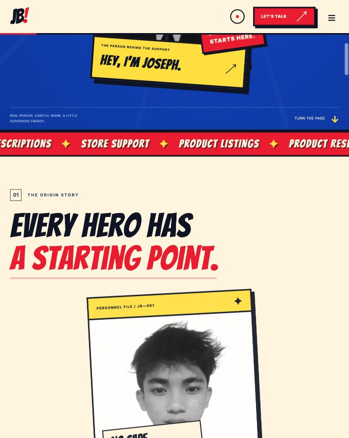

Replace the fictional product
The captured homepage used an invented tote and price comparison. Replace these with identified products, dated sources, and tangible files.
PROJECT 02 / OWN-WEBSITE REVIEW
A dated review of the published portfolio, with recorded metadata and a focused content plan.

| Element | Observed value | Assessment |
|---|---|---|
| Page title | Joseph Berin — E-commerce Virtual Assistant | Names the person and the core service. |
| Canonical | https://josephberinyourva.site/ | Matches the intended public homepage. |
| Meta robots | index,follow | Does not itself prevent indexing; does not prove Google indexation. |
| Main headings | 1 H1 | Name-led; service context is supplied nearby. |
| Images without an alt attribute | 0 of 3 | Attributes present; this count does not assess every description’s quality. |
| JSON-LD blocks | 0 | Optional enhancement, not an indexing requirement. |
The captured homepage used an invented tote and price comparison. Replace these with identified products, dated sources, and tangible files.
Describe the catalog, the product, and the task in link text. Give each project a clear output and decision log.
Keep the service-led title, custom-domain canonical, and descriptive image text. No need to treat existing good metadata as missing.
Product listing preparation, product research and clear descriptions. Explore Joseph Berin’s catalog and copy projects, with source files and review notes.
This preview is a draft, not a screenshot of a Google result. Search engines may use different text.
After the update, check live headings, source links, downloads, mobile layout, and index directives. Use authorized Search Console access later to evaluate impressions and clicks across comparable periods.
Public DOM review only. No Search Console access, full crawl, ranking baseline, or performance uplift is claimed.